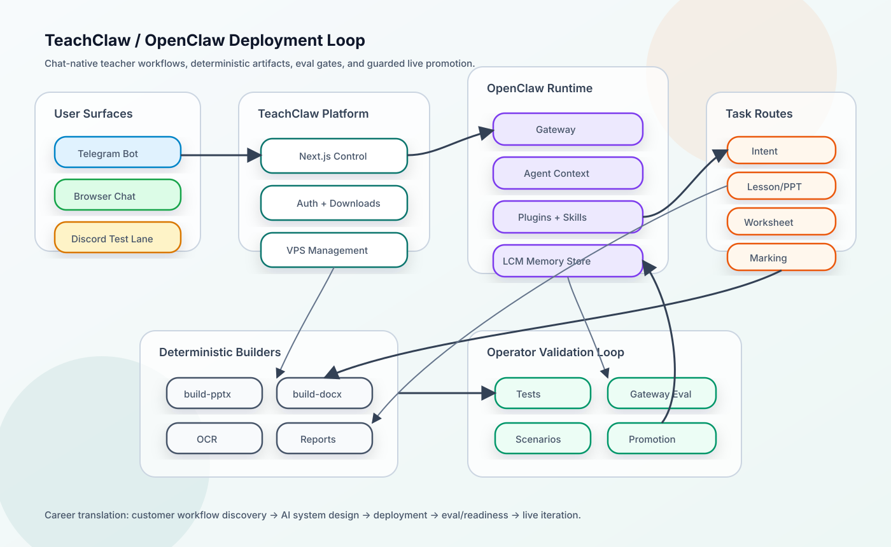

{kind=link}
Lesson decks
Turns a teacher request into a real .pptx artifact using structured intermediate JSON plus a Python builder.
TeachClaw deployment case study
TeachClaw is a chat-native AI assistant for UK teachers. It turns plain teacher requests into lesson decks, worksheets, mark schemes, student feedback, marking support, and classroom artifacts through a live OpenClaw runtime.

These are public-safe numbers from the career evidence pack. They show usage, eval depth, and the kind of release discipline behind the project.
Problem and system
The product thesis is that education software should remove work, not add another inbox. A teacher should be able to send a normal request and get finished school work back: a deck, worksheet, feedback draft, mark scheme, or marking report.
The system is deliberately workflow-first. TeachClaw uses browser and Telegram surfaces, OpenClaw as the runtime layer, task-family routing, deterministic builders for generated files, and validation lanes before promotion.
Turns a teacher request into a real .pptx artifact using structured intermediate JSON plus a Python builder.
Generates classroom worksheets and answer keys as real .docx artifacts rather than only chat text.
Routes student work through OCR/transcript, judgement, correction, and report-rendering paths.
Uses scoped memory cards so preferences can improve output without leaking raw memory or cross-teacher context.
The case study is strongest when it is framed as a deployment loop. The model is only one part of the system.
Example public-safe scenario: create a Year 11 Macbeth ambition analysis PowerPoint for AQA Paper 1 and return the final file path only.
The runtime decides whether this is a PowerPoint, worksheet, marking, email, admin, or chat route. Output expectations are explicit: text reply or artifact path, extension, required terms, and forbidden leakage.
For generated resources, the agent must call the correct builder and create a file. A route that merely promises a deck without creating one should fail.
The promotion summary records source of truth, commit SHA, built artifact hash, loaded test-runtime hash, scenario outcomes, risks, and whether human approval is still required.
These are sanitized snippets from the shape of the TeachClaw eval packs and promotion summaries. They show the kind of behavior that gets checked.
{
"id": "ppt-macbeth-ambition-analysis",
"family": "powerpoint",
"thread": [{
"message": "Create a Year 11 Macbeth ambition analysis PowerPoint for AQA Paper 1. Build the actual .pptx file and return the final file path only."
}],
"expected_output": {
"kind": "artifact_path",
"extension": ".pptx"
}
}The eval is product-shaped: the route has to produce the actual artifact, not just a nice response.
{
"required_route_log_substrings": [
"route=hybrid_staged"
],
"required_exec_patterns": [
"build-pptx.py --file ... .pptx"
],
"forbidden_exec_patterns": [
"ad hoc shell generation"
],
"max_exec_calls": 4
}This catches false success, wrong-route behavior, and unbounded tool use.
{
"required_route_log_substrings": [
"memory_card route=worksheet",
"memory_event route=worksheet status=logged"
],
"forbidden_route_log_substrings": [
"other_teacher_private",
"raw_memory_dump"
]
}Memory is useful only if it is scoped. The eval checks that the active teacher gets the right context without leakage.
worksheet-core-generation:
status: needs_judgement
mechanical_result: pass
quality_result: needs_judgement
drift_status: pass
recommendation:
status: not ready
why: at least one latest scenario is failingA mechanical pass is not treated as production readiness. Teaching quality and live-surface proof still matter.
The project became useful because the hard parts were not abstract. They appeared through real usage, runtime drift, and teacher-facing quality constraints.
TeachClaw has repo source, runtime mirrors, gateway-loaded payloads, and live VPS payloads. A fix is not real until the loaded layer is proven.
A .pptx can render and still be weak teaching. The validation model separates mechanical success from teacher-quality judgement.
Risky changes move through local tests, local gateway proof, agentic evals, and guarded live smoke only when explicitly approved.
The real lesson: production AI is not just model output. It is routing, memory, contracts, evals, artifacts, deployment truth, and knowing when not to ship.
This is why TeachClaw is a strong career signal for AI Deployment and Forward Deployed Engineering roles.
Turned teacher pain into product surfaces and concrete workflow routes instead of generic AI chat.
Worked across TypeScript, Python builders, Docker/VPS deployment, browser/Telegram surfaces, and runtime debugging.
Converted repeated failure modes into eval packs, promotion summaries, local/live safety boundaries, and public-safe case studies.